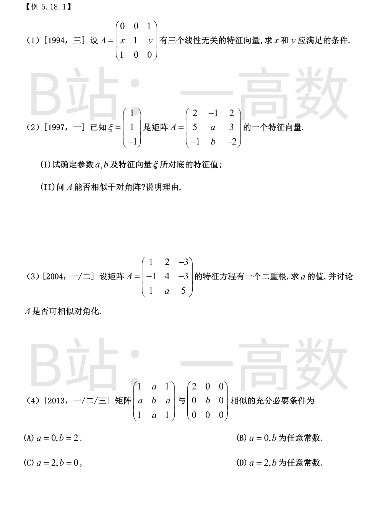
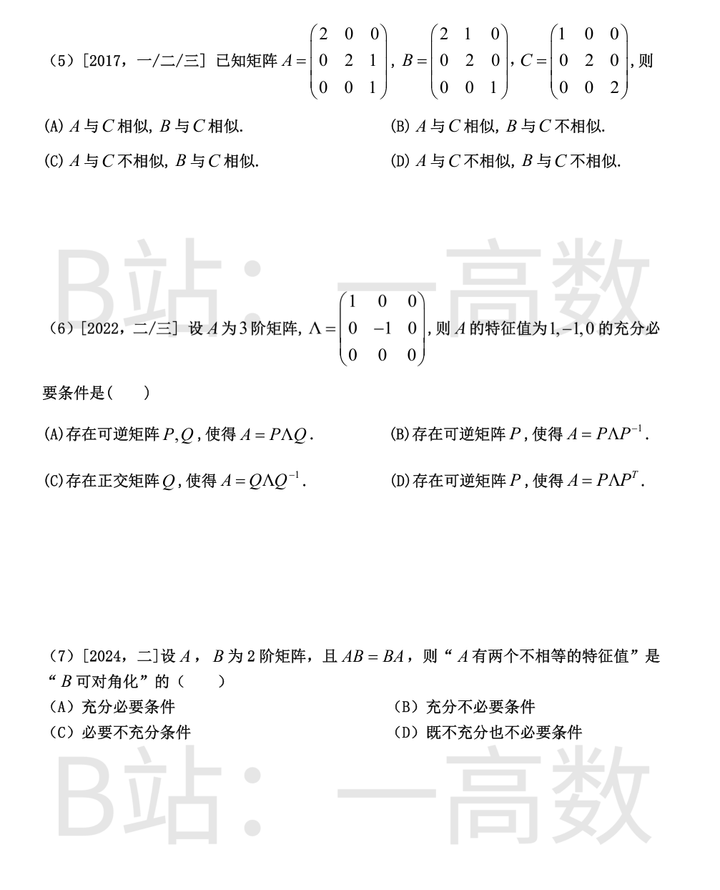
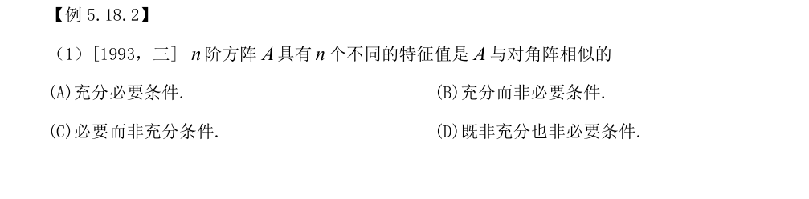
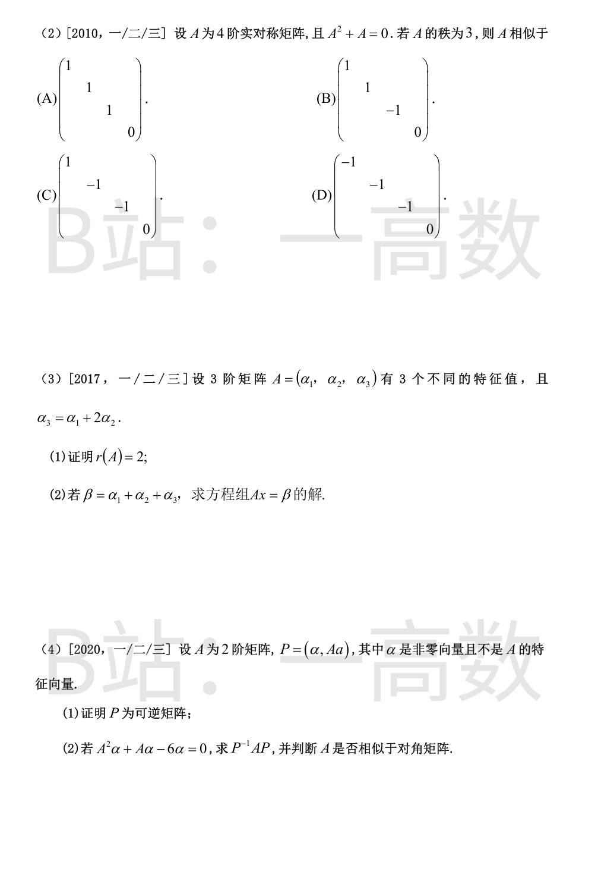

$$|\lambda E-A|=(1-\lambda)(\lambda^{2}-1)=-(\lambda-1)^{2}(\lambda+1),$$
特征值 $\lambda=1$（二重）与 $\lambda=-1$（单根必有特征向量）。
有 3 个线性无关特征向量 $\iff$ $\lambda=1$ 的几何重数为 $2$ $\iff$ $r(A-E)=1$。
$$A-E=\begin{pmatrix}-1&0&1\\x&0&y\\1&0&-1\end{pmatrix},$$
第 3 行 $=-$第 1 行，故需第 2 行与第 1 行成比例：$(x,0,y)=c(-1,0,1)$，即
$$x+y=0 .$$
**(I)** $A\xi=\lambda\xi$：
- 第 1 行：$2-1-2=-1=\lambda$；
- 第 2 行：$5+a-3=2+a=\lambda=-1\Rightarrow a=-3$；
- 第 3 行：$-1+b+2=1+b=-\lambda=1\Rightarrow b=0$。
故 $a=-3,\ b=0$，$\lambda=-1$。
**(II)**
$$|\lambda E-A|=-(\lambda+1)^{3},$$
即 $\lambda=-1$ 为三重特征值。
$$A+E=\begin{pmatrix}3&-1&2\\5&-2&3\\-1&0&-1\end{pmatrix},\qquad r(A+E)=2\ (\text{第1、2行不成比例且行列式为}0),$$
故 $\lambda=-1$ 的线性无关特征向量个数为 $3-2=1<3$，$A$ **不能**相似于对角阵。
$$f(\lambda)=|\lambda E-A|=\lambda^{3}-10\lambda^{2}+(34+3a)\lambda-(36+6a)=(\lambda-2)\big(\lambda^{2}-8\lambda+18+3a\big),$$
即 $\lambda=2$ 恒为根。要有二重根，有两种情形：
**情形 1**：$\lambda=2$ 也是二次因式的根：$4-16+18+3a=6+3a=0\Rightarrow a=-2$。
此时 $f(\lambda)=(\lambda-2)^{2}(\lambda-6)$。
$$A-2E=\begin{pmatrix}-1&2&-3\\-1&2&-3\\1&-2&3\end{pmatrix},\qquad r(A-2E)=1,$$
$\lambda=2$ 的几何重数 $=3-1=2$，故 $A$ **可相似对角化**。
**情形 2**：二次因式判别式为零：$64-4(18+3a)=-8-12a=0\Rightarrow a=-\dfrac23$。
此时 $f(\lambda)=(\lambda-2)(\lambda-4)^{2}$，二重根 $\lambda=4$。
$$A-4E=\begin{pmatrix}-3&2&-3\\-1&0&-3\\1&-\frac23&1\end{pmatrix},$$
第 1 行 $=-3\times$ 第 3 行，但第 2 行 $(-1,0,-3)$ 与第 3 行不成比例，$r(A-4E)=2$，$\lambda=4$ 的几何重数为 $1<2$，故 $A$ **不可相似对角化**。
记 $S=\begin{pmatrix}1&a&1\\a&b&a\\1&a&1\end{pmatrix}$（实对称，必可对角化）。$S(1,0,-1)^T=0$，即 $\lambda=0$ 是特征值。在与 $(1,0,-1)^T$ 正交的二维不变子空间（基 $v_1=(1,0,1)^T,\ v_2=(0,1,0)^T$）上：
$$S v_1=2v_1+2a\,v_2,\qquad S v_2=a\,v_1+b\,v_2,$$
即限制矩阵为 $M=\begin{pmatrix}2&a\\2a&b\end{pmatrix}$，$S$ 的特征值 $=\{0\}\cup\{$$M$ 的特征值$\}$。
$S\sim\mathrm{diag}(2,b,0)\iff M$ 的特征值为 $\{2,b\}$。由 $\mathrm{tr}(M)=2+b$ 自动吻合，只需
$$\det M=2b-2a^{2}=2b\ \Longrightarrow\ a=0 .$$
$a=0$ 时 $M=\mathrm{diag}(2,b)$，确有 $S\sim\mathrm{diag}(2,b,0)$，对任意 $b$ 成立。
故充要条件为 $a=0$（$b$ 任意），选 **B**。
三个矩阵的特征值均为 $\{1,2,2\}$，$C$ 为对角阵。
**A**：$A-2E=\begin{pmatrix}0&0&0\\0&0&1\\0&0&-1\end{pmatrix}$，$r(A-2E)=1$，故 $\lambda=2$ 的几何重数为 $2$，$A$ 可对角化，$A\sim C$。
**B**：$B-2E=\begin{pmatrix}0&1&0\\0&0&0\\0&0&-1\end{pmatrix}$，$r(B-2E)=2$，$\lambda=2$ 的几何重数为 $1$，$B$ 不可对角化，$B\not\sim C$。
故 $A$ 与 $C$ 相似、$B$ 与 $C$ 不相似，选 **B**。
**(B)**：$A=P\Lambda P^{-1}$ 即 $A\sim\Lambda$，特征值必为 $1,-1,0$；反之，特征值为三个互异数 $1,-1,0$ 的矩阵必可对角化，故必存在这样的 $P$。充要，正确。
**(A)**：$P\Lambda Q$ 与 $\Lambda$ 等价，$\iff r(A)=r(\Lambda)=2$，与特征值无关（如 $2E$ 的秩为 3 不行，而 $\mathrm{diag}(3,5,0)$ 秩 2 但特征值不对），不正确。
**(C)**：$A=Q\Lambda Q^{T}$ 推出 $A$ 实对称，比"特征值为 $1,-1,0$"强（不对称的反例不满足），非必要。
**(D)**：合同 $A=P\Lambda P^{T}$ 只保惯性不保特征值（如 $P=2I$ 时特征值变为 $4,-4,0$），既不充分也非必要。
选 **B**。
**充分性**：设 $A$ 有两个不同特征值 $\lambda_1\neq\lambda_2$，特征向量 $\xi_1,\xi_2$（线性无关）。由 $AB=BA$：
$$A(B\xi_i)=B(A\xi_i)=\lambda_i B\xi_i,$$
故 $B\xi_i$ 仍属于 $\lambda_i$ 的特征子空间；2 阶矩阵不同特征值的特征子空间都是 1 维的，故
$$B\xi_i=\mu_i\xi_i\ (i=1,2).$$
$\xi_1,\xi_2$ 是 $B$ 的两个线性无关特征向量，$B$ 可对角化。
**必要性不成立**：反例 $A=E$（特征值 $1,1$），任取可对角化的 $B$（如 $B=\mathrm{diag}(1,2)$），$AB=BA$ 成立，但 $A$ 没有两个不等的特征值。
故为充分而不必要条件，选 **B**。


**充分**：$n$ 个互异特征值给出 $n$ 个线性无关的特征向量，$A$ 可对角化。
**不必要**：如 $A=E$ 与对角阵相似，但特征值全相等（不互异）。
故为充分而非必要条件，选 **B**。
设 $\lambda$ 为 $A$ 的特征值，由 $A^{2}+A=0$ 得 $\lambda^{2}+\lambda=0$，即 $\lambda\in\{0,-1\}$。
$A$ 实对称必可对角化，且 $r(A)=$ 非零特征值个数 $=3$，故特征值为 $-1,-1,-1,0$。
$$A\sim\begin{pmatrix}-1&&&\\&-1&&\\&&-1&\\&&&0\end{pmatrix},$$
选 **D**。
**(1)** 由 $\alpha_3=\alpha_1+2\alpha_2$ 得列向量组线性相关，$r(A)\le2$；且
$$A\begin{pmatrix}1\\2\\-1\end{pmatrix}=\alpha_1+2\alpha_2-\alpha_3=0,$$
即 $\lambda=0$ 是 $A$ 的特征值。若 $r(A)\le1$，则 $\lambda=0$ 的几何重数 $\ge2$，其代数重数 $\ge2$，与 $A$ 有 3 个不同特征值（每个代数重数为 1）矛盾。故 $r(A)=2$。
**(2)** $r(A)=2<3$，且特解显然：
$$A\begin{pmatrix}1\\1\\1\end{pmatrix}=\alpha_1+\alpha_2+\alpha_3=\beta ;$$
导出组 $Ax=0$ 的基础解系为 $\xi=(1,2,-1)^{T}$（$3-r(A)=1$ 个）。
故通解为
$$x=\begin{pmatrix}1\\1\\1\end{pmatrix}+t\begin{pmatrix}1\\2\\-1\end{pmatrix}\quad(t\in\mathbb{R}).$$
**(1)** 设 $k_1\alpha+k_2A\alpha=0$。若 $k_2\neq0$，则 $A\alpha=-\dfrac{k_1}{k_2}\alpha$，即 $\alpha$ 是 $A$ 的特征向量，矛盾；故 $k_2=0$，进而 $k_1\alpha=0$ 得 $k_1=0$。$\alpha$ 与 $A\alpha$ 线性无关，$P=(\alpha,A\alpha)$ 可逆。
**(2)** 由 $A^{2}\alpha=6\alpha-A\alpha$：
$$AP=A(\alpha,\ A\alpha)=(A\alpha,\ A^{2}\alpha)=(A\alpha,\ 6\alpha-A\alpha)
=(\alpha,\ A\alpha)\begin{pmatrix}0&6\\1&-1\end{pmatrix},$$
故
$$P^{-1}AP=\begin{pmatrix}0&6\\1&-1\end{pmatrix}.$$
其特征多项式 $\lambda^{2}+\lambda-6=(\lambda-2)(\lambda+3)$，特征值 $2,-3$ 互异，该矩阵可对角化；又 $A$ 与它相似，故 $A$ 相似于对角阵 $\mathrm{diag}(2,-3)$。